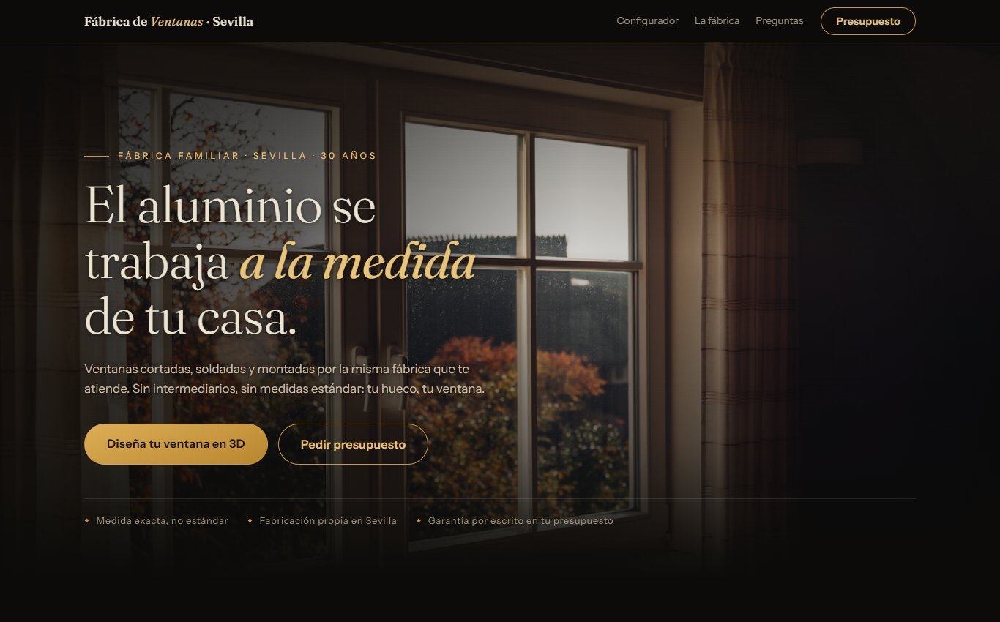
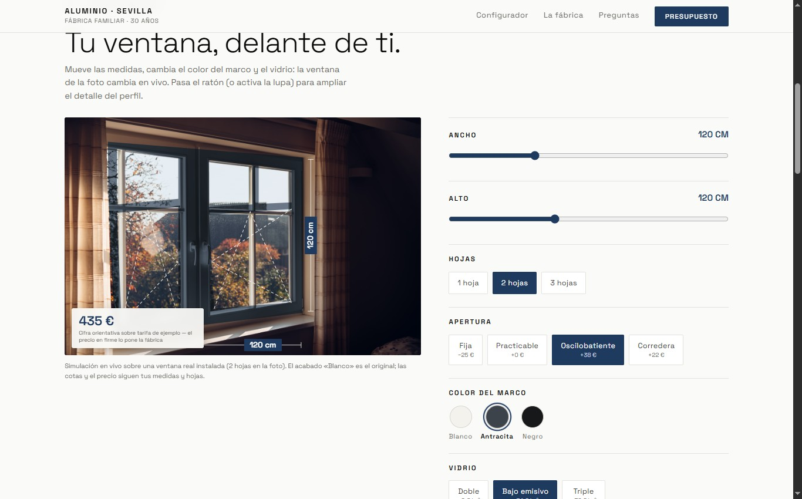
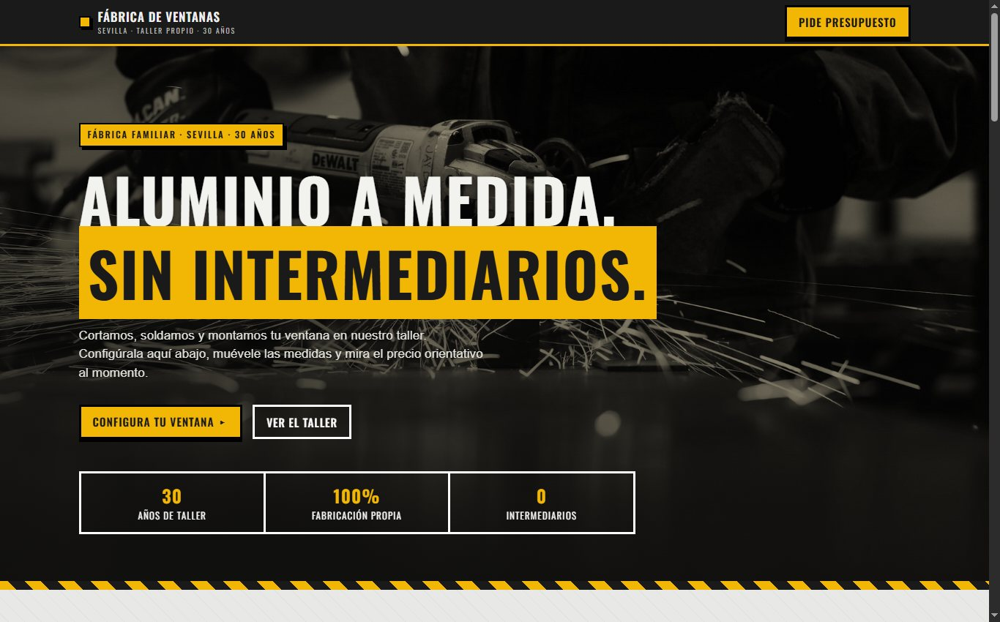
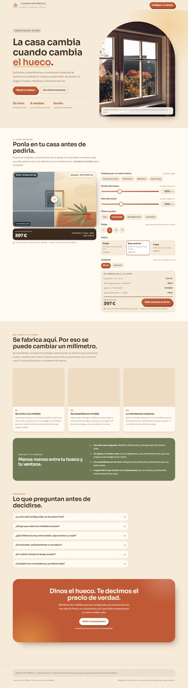

Cinco propuestas de web para la fabrica, con cinco configuradores diferentes. Abrelas tambien en el movil: todas estan hechas para que la ventana se siga viendo mientras eliges. Los precios salen de una tarifa de EJEMPLO — el precio real lo pone la fabrica.

Lujo sobrio nocturno. Ventana 3D de verdad: la giras con el dedo y las hojas se abren en 3D segun la apertura que elijas.
Abrir la maqueta →
Blanco galeria. El editor cambia el color del marco y el tinte del cristal SOBRE LA FOTO REAL, con lupa de detalle.
Abrir la maqueta →
Hormigon, acero y amarillo seguridad. Plano isometrico con despiece animado del vidrio y su camara de aire.
Abrir la maqueta →
Calida y humana. Escena de habitacion con comparador antes/despues: el hueco viejo frente a tu ventana con el sol entrando.
Abrir la maqueta →App oscura tipo SaaS. Asistente de 4 pasos, ventana 3D que gira sola y se mueve segun eliges, y CHATBOT que responde 14 dudas frecuentes sin conexion.
Abrir la maqueta →